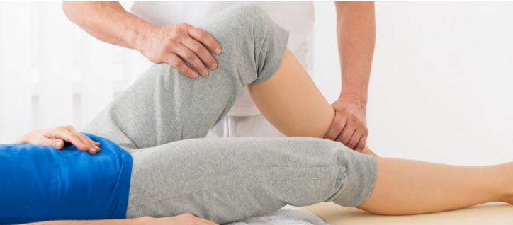
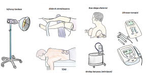
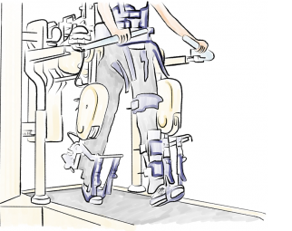
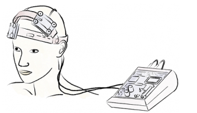
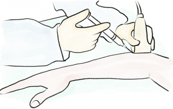

Fizik Tedavi ve Rehabilitasyon
Fizik tedavi ve rehabilitasyon nedir?
Fizik tedavi ve rehabilitasyon, beyin, omurilik, sinirler, kemik, eklem, kas, ligament hastalıkları veya
yaralanmaları sonrasında kişilerin yaşam kalitesi ve fonksiyonel durumlarını iyileştirmeyi amaçlayan bir
uzmanlık alanıdır. Fizik tedavi ve rehabilitasyon, kas iskelet sistemi hastalıklarının ameliyat dışı
tedavilerinden sorumludur. Bunu egzersiz, ilaç, fizik tedavi, ortez reçeteleme, enjeksiyonlar gibi
yöntemlerle yapar. Fizik tedavi, ısı (sıcak-soğuk), ses (ultrason), ışık (lazer), su (hidroterapi),
elektromanyetizma (TENS, manyetik alan tedavileri), kuvvet (traksiyon, masaj) gibi fiziksel olguların
kullanımı ile hastalıkların tedavisini ifade eder. Fizik tedavinin tarihi tıp kadar eskiye dayanır.
Fizik tedavinin amaçları
Hastadan hastaya değişmekle beraber fizik tedavi uygulamaları şu amaçlarla yapılabilir:
- Eklemlerin normal hareket derecelerinde hareket edebilmesini sağlama
- Kas güçlendirme
- Eklem stabilitesini sağlama
- Kas esnekliğini sağlama
- Günlük yaşam aktivitelerinde bağımsızlığı sağlama
- Herhangi bir hastalığa bağlı kaybedilmiş fonksiyonel becerileri geri kazandırma
- Yürüme mesafesini, hareket kabiliyetini arttırma
- Genel sağlığı iyileştirme, kişinin maksimum potansiyelini gerçekleştirmesine yardım etme
Fizik tedavinin faydaları
Tedavi amacına göre değişmekle beraber fizik tedavi kişide şu faydaları sağlayabilir:
- Ağrıda azalma, ağrı kesici ilaç kullanma ihtiyacında azalma
- Ameliyat ihtiyacını ortadan kaldırma veya erteleme
- Hareket ve fonksiyonelliği arttırma
- Yaralanma sonrası tedavi
- Ameliyat sonrası normal yaşama dönülmesini sağlama
- İnme, beyin hasarı veya omurilik yaralanmasına bağlı felçlerin tedavisi
- Düşmelerin önlenmesi, dengenin iyileştirilmesi
- Yaşa bağlı kas erimesi, eklem tutukluğu, kemik erimesi gibi sorunların tedavisi
Fizik tedavide kullanılan cihazlar

Fizik tedavide kullanılan bazı cihazlar
Elektroterapi: Genelde cilt üzerine yerleştirilen elektrotlarla verilen elektrik akımları
ile sinir ya da kasların uyarılması prensibine göre ağrıda azalma ve kas erimesini önleme gibi faydalar
sağlar.
Ultrason: Ses dalgaları kullanılarak derin dokularda ısıtıcı etki, hücre zarı geçirgenliğinde artış,
bağışıklık sistemi hücrelerinin aktivitesinin modülasyonu gibi etkiler elde edilebilir. Bazı ilaçların
ciltten verilmesine yardım edebilir (fonoforez).
Kısa dalga diatermi: Özel seçilmiş frekanslarda elektromanyetik dalgalar kullanılarak
derin dokularısıtılabilir.
Mikro dalga diatermi: Çalışma prensibi kısa dalga diatermiye benzer, kullanılan dalga
boyları farklıdır.
Manyetik alan tedavisi: Manyetizma ile dokularda iyileşme sağladığı kabul edilmektedir.
Lazer:Soğuk lazer de denilen düşük güçlü lazerler ile ağrı kesici, yara iyileşmesini arttırıcı,
hücre metabolizmasını arttırıcı etkiler görülebilir. Cilt yüzeyindeki yaralar ve yüzeye yakın entezit,
epikondilit gibi sorunlarda kullanılmaktadır.
Traksiyon Bel ve boyun fıtığında özel cihazlarla mekanik çekme kuvveti uygulanarak omurga
kemikleri arasındaki disklerin maruz kaldığı stres azaltılabilir.
Su tedavileri (hidroterapi): Su tarih boyunca tedavi amaçlı kullanılmıştır, en eski fizik tedavi
uygulamalarından biridir. Sıcak banyolar, girdap banyosu gibi pasif tedaviler yanında tedavi
havuzlarında hastanın egzersiz yaparak aktif katıldığı su tedavileri de vardır. Suyun kaldırma kuvveti
eklemlere binen yükü azaltır ve kas güçsüzlüğü olan kişilerin karaya göre daha rahat etmesini sağlar.
Sıcak ve soğuk tedavileri:Belki de en yaygın kullanılan fizik tedavi yöntemleri sıcak ve soğuk uygulamalardır.
Soğuk uygulama ödemi, iltihabı, ağrıyı azaltıcı etki gösterir. Spastisite denilen kas sertliği de soğuk
tedavi ile azalabilir. Sıcak tedavi kasları, bağları esnetir, kas spazmını çözer, ağrıyı azaltır, dolaşımı
arttırır. Coldpack, hotpack, infraruj gibi araçlar kullanılabilir.
Ortez ve protezler:Ortezler kişinin kol, bacak veya gövdesi üzerine giydiği yardımcı cihazlardır. Eklemleri koruyucu veya
fonksiyonu arttırıcı amaçla kullanılabilir. Protezler kaybedilmiş uzvun yerine kullanılan cihazlardır.
Yürümeye yardımcı cihazlar:Baston, tripot, kanadyen, walker gibi cihazlar yürümeyi kolaylaştırabilir.
Fizik tedavide kullanılan yöntemler
Masaj:Skar dokusu masajı, derin doku masajı, lenfödem masajı gibi farklı tekniklerle
eklem kısıtlılığını açmak, dolaşımı arttırmak, kas spazmını çözmek, ağrıyı gidermek gibi amaçlarla
yapılabilir.
Bantlama teknikleri: Kinezyoteyp gibi bantalama teknikleri duruş bozukluğu düzeltilmesi,
kas kaynaklı ağrıların tedavisi gibi amaçlarla uygulanabilir.
Manuel terapi: Eller kullanılarak eklem ve kaslar muayene edilir ve çeşitli kuvvet
uygulama teknikleri ile tedavi yapılır.
Tedavi edici egzersizler:Fizik tedavinin en önemli bileşenlerinden birisidir. Genel olarak hastanın katılımının sağlandığı
aktif tedaviler iyileşmede daha başarılı olmaktadır ki egzersiz uygulamaları bu tedavilerin başında gelir. Eklem hareketlerini normale
getirmek, kasları güçlendirmek, denge ve koordinasyonu arttırmak, kalp-akciğer kapasitesini arttırmak gibi amaçlara yönelik özel tasarlanmış
egzersizlerle tedavi yapılır. Egzersizler hiçbir araç gerektirmeden yapılabileceği gibi çeşitli ağırlıklar, bantlar, yaylar, egzersiz
topları, egzersiz hamurları, denge tahtası, omuz çarkı, tilt masası, paralel bar gibi basit araçlarla da gerçekleştirilebilir. Bilgisayar
destekli arttırılmış veya sanal gerçeklik kullanan robotik cihazlar gibi yüksek teknolojiden yararlanılabilir.
Enjeksiyonlar:Kuru iğneleme, tetik nokta enjeksiyonları, eklem içi enjeksiyonlar, eklem çevresi yapılara enjeksiyonlar,
omurga sorunlarına yönelik enjeksiyonlar uygulanabilmektedir.
Hasta eğitimi:Fizik tedavi ile elde edilen sonuçların kalıcılığının sağlanması için hasta eğitimi gerekir. Bu eğitim
hastalığın anlatılması, önleyici yaklaşımlar ve kendi kendine uygulanabilecek tedavi yöntemlerini içerir.
Robotik fizik tedavi ve yeni teknolojiler
Fizik tedavi ve rehabilitasyon, yeni teknolojilerin yoğun bir şekilde kullanıldığı ve hızla değişip gelişen bir alandır. Egzersiz
fizyolojisi, hasarlanmadan sonra sinir dokusunun iyileşme süreci, beynin plastisitesi hakkındaki bilgiler her gün artmakta ve son teknoloji
imkanları daha iyi rehabilitasyon yöntemleri için adapte edilmektedir. Robotik fizik tedavi ve robotik rehabilitasyon bu anlamda öne çıkan
uygulamalardır.
El Kol Robotu: İnme, beyin hasarı, boyun seviyesinde omurilik yaralanması hastalarında el ve kolda oluşan kuvvetsizlik ve
fonksiyon kayıplarını iyileştirmede el kol robotları yoğun olarak kullanılır. Robotik sistemlerle hastanın yapması gereken hareketler aynı
kalitede bol tekrarla makine yardımıyla yaptırılır. Çeşitli görsel geri bildirim yöntemleri ile hareketler değişik amaçlarla eşleştirilebilir
ve hastanın motivasyonu ile öğrenme hızı arttırılabilir.

İnme, beyin hasarı, omurilik yaralanması, yürümeyi bozan pek çok nörolojik veya ortopedik hastalığın rehabilitasyonunda yürüme robotu
kullanılır.
Yürüme robotu / Yer çekimsiz yürüme robotu-bandı: İnme, beyin hasarı, omurilik yaralanması, yürümeyi bozan pek çok nörolojik
veya ortopedik hastalığın rehabilitasyonunda yürüme robotu kullanılır. Tek başına ayakta duramayan hastalar bu cihazlar yardımıyla ayağa
kaldırılır ve yürüme simülasyonu yapılır. Yürüme egzersizleri kan dolaşımı, kemik erimesinin önlenmesi, bağırsak hareketleri gibi yan
faydalarının yanında beyine yürüme ile ilgili duyu sinyalleri göndererek yürüme ile ilgili sinir devrelerini uyarır, plastisiteyi arttırır.
İzokinetik test ve egzersiz sistemi-Cybex:Kas güçlendirme egzersizlerinde izokinetik egzersizlerin pek çok avantajı vardır. Kasın uyguladığı
kuvvetten bağımsız olarak sabit açısal hızda hareket edilen bu egzersiz için özel cihazlara gerek duyulur. İzokinetik test ve egzersiz
sistemi (Cybex) hem kas gücünün ayrıntılı ve objektif değerlendirilmesini hem de performans artışı için kontrollü egzersiz yaptırılmasını
sağlar. Profesyonel sporcular izokinetik egzersiz sistemleri ile potansiyellerini maksimuma çıkarmaktadır.
Bilgisayarlı denge eğitimi platformu: Giyilebilir teknolojilerden vücut pozisyonu ve hareketinin yüksek doğrulukla ölçülüp
kaydedilmesi için yararlanılır. Bilgisayarlı denge platformu sanal veya arttırılmış gerçeklik ortamına entegre edilerek denge
bozukluklarının tedavisinde yeni imkanlar sunmaktadır.
Fizik tedavi ve rehabilitasyonda nöromodülasyon

Transkraniyel doğru akım ile stimülasyon tekniği gibi yöntemlerle beynin çeşitli alanlarının uyarılabilirliği düzenlenebilir. Böylece
nörorehabilitasyonun etkinliği arttırılabilir.
Beyin ve omurilik hasarına bağlı hastalıkların tedavi ve rehabilitasyonunda yüksek teknolojinin kullanıma girdiği ve hızla geliştiği diğer
bir alan nöromodülasyondur. Nöromodülasyonda sinir hücrelerinin uyarılabilirliği arttırılabilir veya azaltılabilir. İnme, beyin hasarı ve
omurilik yaralanmalarında karşılaşılan sorunların bir kısmı ilgili sinir dokusunun baskılanması, bir kısmı sinir dokusunun aşırı uyarılması,
bazı sorunlar ise çeşitli sinir dokularının uyarım durumu arasındaki dengesizliklerden kaynaklanır. Transkraniyel manyetik stimülasyon,
transkraniyel doğru akım ile stimülasyon teknikleri gibi yöntemlerle beynin çeşitli alanlarının uyarılabilirliği düzenlenir. Bu teknikler
beynin plastisitesini arttırmakta ve uygun şartlarda diğer rehabilitasyon yöntemlerinin etkisini kuvvetlendirmektedir.
Sağlığın üç aşaması: korunma, tedavi, rehabilitasyon
Fizik tedavi ve rehabilitasyon sağlığın oldukça geniş bir alanıyla ilgilenir. Sağlık hizmetleri 3 kısma ayrılabilir. Birincil koruma
denilen sağlık hizmetleri hastalıkların daha oluşmadan önlenmesini içerir. Aşılama faaliyetleri, sağlıklı beslenme ve egzersiz ile pek çok
hastalık riskinin azaltılması buna örnek gösterilebilir. İkincil koruma hastalanınca sağlık kuruluşuna başvurulduğunda alınan tedavi
hizmetlerini kapsar. Üçüncül koruma ise hastalığa bağlı olarak tam iyileşme olmayan kişilerin engellilik durumlarının azaltılmasını yani
rehabilitasyonu kapsar. Birincil koruma daha çok aile hekimleri ve toplum sağlığı merkezleri, ikincil koruma çoğunlukla uzmanlık dalları
(iç hastalıkları, genel cerrahi, vb) kapsamına girer. Oysa yine bir uzmanlık alanı olan fizik tedavi ve rehabilitasyon neredeyse tek başına
üçüncül korumayı yani rehabilitasyonu üstlenir.
Kaç çeşit rehabilitasyon var?
Rehabilitasyon doğuştan olan spina bifida (belde kese ile doğma) gibi hastalıklarda, sonradan meydana gelen beyin kanaması, omurilik
yaralanması, Parkinson hastalığı, multipler skleroz (MS) gibi sinir sistemi hastalıklarda, ön çapraz bağ kopması veya kırıklar gibi
ortopedik sorunların ameliyatları sonrası, kalp krizi sonrası normal yaşama dönebilmek için, KOAH gibi akciğer hastalıklarında, kanser
tedavisiyle beraber ya da tedavi sonrası kişinin yaşam kalitesi ve fonksiyonel bağımsızlığını arttırma amacıyla uygulanır. Bu saydığımız
konular sırasıyla pediatrik rehabilitasyon, nörolojik rehabilitasyon, ortopedik rehabilitasyon, kardiyak rehabilitasyon, pulmoner
rehabilitasyon, kanser rehabilitasyonu alanlarına örneklerdir. Bunların dışında denge bozukluklarının tedavisinde denge rehabilitasyonu,
el tendon, damar ve sinir yaralanmalarının onarım ameliyatları sonrası el rehabilitasyonu, sportif yaralanmalar sonrası sportif
rehabilitasyon, yaşlılığa özel sorunlar için geriatrik (yaşlı) rehabilitasyon, kadın sağlığı ve idrar kaçırma problemleri için pelvik taban
rehabilitasyonu, ampute hastalar için ampute rehabilitasyonu yapılmaktadır. Yanık hastaları, diyabetik ülserler, çeşitli yaraların bakımı
da rehabilitasyon alanına giren özel konulardır. Böylece rehabilitasyonun her yaş grubunu ve pek çok hastalığı kapsadığını görüyoruz.

Ampute rehabilitasyonu, amputasyon öncesinden kalıcı protez kullanımına dek devam eden bir süreçtir.
Rehabilitasyona bir örnek: inme hastasının rehabilitasyonu
Rehabilitasyonun bu derece geniş kapsamlı bir konu olmasının yanında her bir alt başlığı adeta ayrı bir dünyadır. İnme hastasının
rehabilitasyonunu örnek olarak konuşalım. Beynin damar tıkanıklığı veya kanamaya bağlı hasarı demek olan inme sonrası felç gelişen bir
hastanın rehabilitasyonu nasıl yapılır düşünelim. Bu kişinin yutma fonksiyonu bozulmuş olabilir. Yutmanın değerlendirilmesi, bozuksa ona
göre beslenme çözümlerinin üretilmesi gerekir. Hangi kıvamda gıda yutabilir, yutabilir mi, yoksa mideden tüple mi beslenmesi gerekir, fizik
tedavi ve rehabilitasyon uzmanı karar verir. Felçli hastaların bir bölümünde konuşma ve anlama bozukluğu gelişebilir. Konuşma terapistleri
afazi denilen bu durumun tedavisine erkenden başlar. Hastanın serviste yatışı süresince yaşamsal bulgularının takibi, uygun pozisyon
değişiminin yapılarak yatak yaralarının önlenmesi, tuvalet alışkanlığının düzenlenmesi, varsa yara bakımı, genel hijyen kurallarına uyulması,
ilaç tedavilerinin uygulanması gibi işler rehabilitasyon hemşireleri sorumluluğundadır. İdrar sorunları, kabızlık, cinsel fonksiyon
sorunları açısından hasta değerlendirilir, gerekli tetkikler ve tedaviler uzman doktor tarafından planlanır.
Hastanın hareket kabiliyeti değerlendirilir. Eklem hareket açıklığı, kas gücü, duyu, denge muayenesi yapılır. Yapması gereken egzersizler
belirlenir. Egzersizlerini fizyoterapistler uygular. Bu hastada omuz ağrısı, eklem tutukluğu, kas zayıflığı gibi şikayetlerin tedavisinde
fizik tedavi yöntemleri kullanılabilir. Fizik tedavi ve rehabilitasyon hekimi tedavi planını yapar ve fizik tedavi teknikerleri bunu uygular.
El ve kol hareketlerinin geri kazandırılmasında robotik rehabilitasyonun yararı açısından hasta muayene edilir ve tedavisi düzenlenir.
Spastisite denilen kas sertliği değerlendirilir, tedavisinde gerekirse botoks enjeksiyonları uzman hekimce yapılır. Hastanın günlük yaşam
aktivitelerinde becerisinin artması ve meslek yaşamına dönmesine yönelik spesifik terapisi iş uğraşı terapisti tarafından yaptırılır.
Hastanın yürümesini kolaylaştıracak, eklem kısıtlanmasını önleyecek yardımcı cihazları uzman doktor reçete eder, ortez teknikeri uygular.
Hastanın diyeti diyetisyen tarafından düzenlenir. Psikiyatrik sorunları açısından psikiyatri uzmanına danışılır. Şeker hastalığı, yüksek
tansiyon, kalp hastalığı gibi ek sorunları varsa ilgili doktorların görüşleri alınır. Hastanın toplum ve iş yaşamına döndürülmesinde sosyal
çalışmacı katkı sağlar.
Rehabilitasyon ekibi
Görüldüğü gibi bir inme hastasının tedavisi birbirinden çok farklı konularda pek çok sağlık çalışanının çabasını gerektirir. Rehabilitasyon
ekibi kavramı bu ihtiyaçtan doğar. Hastayı bütüncül olarak değerlendiren, bütün bu çabayı iyileşme hedefine yönelik koordine eden ve
hastanın karşısındaki muhatap doktor fizik tedavi ve rehabilitasyon uzmanıdır. Bu durum travmatik beyin hasarında, omurilik yaralanmasında
da benzer şekildedir. Multiple skleroz, Parkinson hastalığı gibi nörolojik hastalıklarda ise tanı konulup ilaç tedavilerinin düzenlenmesi
nöroloji uzmanı tarafından yapılır. Ancak günümüz şartlarında bu tür pek çok nörolojik hastalıkta ilaç tedavisi ile kesin iyileşme olmayıp
hastanın yaşam kalitesini arttırmak ve fonksiyonel bağımsızlığını sağlamak için rehabilitasyon yaklaşımlarına gerek olur. Bu süreci fizik
tedavi ve rehabilitasyon uzmanı koordine eder.
Kas iskelet sorunları fizik tedavi ile ilgilidir

Eklem ve eklem çevresindeki yapıların enjeksiyon / iğne ile tedavisi fizik tedavi ve rehabilitasyon uzmanının uyguladığı tedaviler
arasındadır.
Kas iskelet sistemi sorunlarının ameliyat dışı tedavisi kısmını biraz daha açalım. Bel, sırt, boyun ağrıları gibi omurga sorunları, omuz,
kalça, diz, ayak gibi eklem ağrıları, kas ağrıları, kemik erimesi (osteoporoz), eklem kireçlenmesi (osteoartrit), romatizmal hastalıklar
(romatoid artrit, ankilozan spondilit, vb) fizik tedavi ve rehabilitasyon uzmanlık alanına girmektedir. Omurga ve eklem ağrılarına tanı
konulması ve ameliyat dışı tedavilerinin düzenlenmesi fizik tedavi ve rehabilitasyon hekimi sorumluluğundadır. Bel ağrısının pek çok nedeni
olabilir. Muayene ve tetkik yöntemleri ile tanı konulması, en uygun tedavinin planlanması ve uygulanması ilk bakışta basit gibi görünse de
ayrıntısına inildiğinde ciltler dolusu kitap bilgisi gerektirir.
Fizik tedavi ve rehabilitasyon branşı neden az biliniyor?
Yukarıda örneklerini verdiğimiz gibi hemen herkesi ilgilendiren bir branş olmasına karşın ülkemizde fizik tedavi ve rehabilitasyonun
bilinirliği diğer uzmanlık alanlarına göre azdır. Fizik tedavi ve rehabilitasyonun belirli bir organa spesifik bir uzmanlık olmaması bunun
nedeni olabilir. Örneğin göz hastalıkları, kulak burun boğaz, cildiye, kardiyoloji gibi alanların ilgilendiği organlar direkt isimlerine
bakarak anlaşılabilir. Oysa fizik tedavi ve rehabilitasyonun ilgi alanı tek kelime veya cümle ile özetlenemez. Sıklıkla hastalar dizi
ağrıyınca ortopedi uzmanına, beli ağrıyınca beyin cerrahisine, boynu ağrıyınca nörolojiye başvurmaktadır. Oysa bu durumlarda ilk
başvurulması gereken fizik tedavi ve rehabilitasyon uzmanıdır.
Fizik tedavi ve rehabilitasyonun tarihsel gelişimi ve isimleri
Halk arasında fizik tedavi ve rehabilitasyonun yeterince iyi bilinmemesinde uzmanlık alanının tarihsel süreçte yaşadığı dönüşümlerin de
etkisi olabilir. Fizik tedavi uygulamaları çok eski olsa da uzmanlık alanı olarak dünyada görece yenidir. Rehabilitasyon yaklaşımları
özellikle İkinci Dünya Savaşı sonrası gelişmiştir. Tıp eğitiminin bir uzmanlık dalı olarak doğru ifadenin “fiziksel tıp ve rehabilitasyon”
olduğu kabul edilse de ülkemizde “fizik tedavi ve rehabilitasyon” ifadesi yaygınlaşmış ve daha çok bilinmektedir. Fizik tedavi ve
rehabilitasyon uzman doktoruna İngilizce’de Physiatrist denilir ve dilimize bu Fiziyatrist olarak çevrilmiştir. Fiziyatrist kelimesi de
maalesef halkın büyük bir kısmı tarafından bilinmez. Sonuçta halk arasında fizik tedavi ve rehabilitasyon uzmanı ya da fizik tedavi uzmanı
ifadeleri daha çok kullanılıyor.
Son yıllarda ülkemizdeki olumlu gelişmeler
Son yıllarda rehabilitasyon ekibinin diğer üyelerinin yetiştirilmesinde ülkemiz hızla aşama kaydetmiştir. Yakın zamana dek ülkemizde
fizyoterapist, iş uğraşı terapisti, rehabilitasyon hemşiresi, konuşma terapisti, ortez protez teknikeri, sosyal çalışmacı sayıları
yetersizdi. Bu nedenle kaliteli bir rehabilitasyon hizmeti vermek güçtü. Yetişmiş ve alanında tecrübeli sağlık çalışanı sayısı artmakta,
fizik tedavi ve rehabilitasyon için özel hastaneler açılmakta, böylece hasta tedavileri daha etkili yapılmaktadır. Hastaların tedavisindeki
başarılar toplumdaki fizik tedavi ve rehabilitasyon algısına da olumlu yansımaktadır.
Fizik tedavi ve rehabilitasyon uzmanı nasıl olunur?
Fizik tedavi ve rehabilitasyon uzman doktoru ülkemizde 6 senelik tıp eğitiminin üzerine 4 senelik uzmanlık eğitimi ile yetişir. Uzmanlık
eğitimi süresince yukarıda bahsettiğimiz hastalıklar ve tedavileri ile ilgili yoğun bir eğitim ve pratik yapılır. Bu eğitim eklem
enjeksiyonları gibi girişimsel işlemler, kas iskelet sistemi hastalıklarının ultrasonografi ile değerlendirilmesi, elektronöromiyografi ile
sinir ve kasların tetkik edilmesi gibi yöntemleri de içerir. Ülkemizde fizik tedavi ve rehabilitasyon uzmanları 3 yıllık yan dal uzmanlık
eğitimi ile Romatoloji (romatizmal hastalıklar) veya Algoloji (ağrı bilimi) uzmanı da olabilmektedir.
Fizik tedavi ve rehabilitasyonu bilmek herkes için gerekli
Sonuç olarak fizik tedavi ve rehabilitasyon hakkında temel bilgi sahibi olmak toplum sağlığını iyileştirir. Fizik tedavi ve rehabilitasyon
uzmanına ne zaman başvurulması gerektiğini bilmek sağlığınız için fark yaratacaktır. Bu bel ağrısı gibi herkesin çok sık tecrübe ettiği bir
sorun veya felç gibi gerçekleşene dek varlığını hiç düşünmediğiniz ama bir kere olduğunda hayatı kökten değiştirebilen ağır bir hastalık
olabilir. Sorun ne olursa olsun, fizik tedavi ve rehabilitasyon hasta odaklı, hastayı bütün olarak değerlendiren ve hayatında gerçek
kazanımlar sağlamayı hedefleyen bir uzmanlık olarak yanınızdadır.